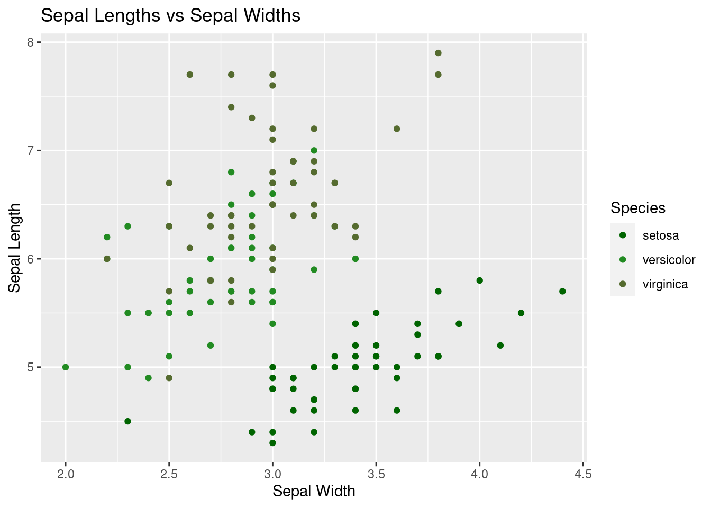

var1 <- "My first variable!"
# print the variable
var1[1] "My first variable!"Jasmine Xu
October 1, 2024
Welcome! Today, we will explore the basics of R programming and dive into data visualization using ggplot2, one of the most popular packages for creating graphics in R.
R is widely used for data analysis and visualization in various fields, including academia, industry, and research. Its applications range from simple data manipulation to complex statistical modeling and machine learning.
The assignment operator in R is <-. You can also use the equals sign =.
Character: Used for text data, enclosed within either single or double quotation marks, e.g. “Hello”, ‘40 Acres’
Numeric: integers and floats. e.g. 12, 3.14, -7.
Logical: Consists of boolean values TRUE and FALSE.
Vectors: A sequence of elements of the same data type.
c() to concatenate items into a vector.
c(1, 2, 3, 4, 5)c("apple", "banana", "orange")c(TRUE, FALSE, TRUE)[1] 1 3 5 8 12 [1] 1 2 3 4 5 6 7 8 9 10# access elements in vectors with square brackets
# note: indexing in R starts at 1, not 0!
print(vec1[3])[1] 5Try to name your variables appropriately! Ensure that your variable names:
TRUE or for"@"average is a better variable name that numberthe_average_of_this_vector_of_numbers is probably not necessary; just average sufficesAlso remember that variable names are case-sensitive! This means that variable and Variable are not the same, and neither are vaRIAbLe and vaRiablE.
| Operator | Name | Example |
|---|---|---|
| + | Addition | x + y |
| - | Subtraction | x - y |
| * | Multiplication | x * y |
| / | Division | x / y |
| ^ | Exponent | x ^ y |
| %% | Modulus (remainder from division) | x %% y |
| % / % | Integer division | x% / %y |
Some example calculations:
[1] 44[1] 52[1] 80Other useful functions for computations include log() for logarithms and sqrt() for square roots.
Base R also comes with several useful functions for statistical analyses, including mean(), median(), and sd().
[1] 5.8[1] 5[1] 4.32435In some cases, you may need to deal with NA values, which indicate missing data.
What happens when you run the following? What happens when you uncomment and re-run lines 5, 8, and 11?
Let’s start playing with real data! We will be using the iris dataset, which is built into R.
The dataset contains 150 observations of iris flowers, each belonging to one of three species: setosa, versicolor, or virginica.
Because the iris dataset is already in R, we don’t need to load it in. If, however, you have a dataset stored locally in a CSV file, you can use data = read.csv("path_to_dataset.csv") to read in your data.
Once a dataset is loaded into your R session, it is stored in a dataframe.
We can take a brief look at the first few rows of the dataset using head():
Sepal.Length Sepal.Width Petal.Length Petal.Width Species
1 5.1 3.5 1.4 0.2 setosa
2 4.9 3.0 1.4 0.2 setosa
3 4.7 3.2 1.3 0.2 setosa
4 4.6 3.1 1.5 0.2 setosa
5 5.0 3.6 1.4 0.2 setosa
6 5.4 3.9 1.7 0.4 setosa[1] "Number of rows: 150"[1] "Number of columns: 5"[1] "Sepal.Length" "Sepal.Width" "Petal.Length" "Petal.Width" "Species" And you can also get some summary statistics about the dataset using the summary() function. Notice the difference in summary statistics between the numeric and categorical variables!
Sepal.Length Sepal.Width Petal.Length Petal.Width
Min. :4.300 Min. :2.000 Min. :1.000 Min. :0.100
1st Qu.:5.100 1st Qu.:2.800 1st Qu.:1.600 1st Qu.:0.300
Median :5.800 Median :3.000 Median :4.350 Median :1.300
Mean :5.843 Mean :3.057 Mean :3.758 Mean :1.199
3rd Qu.:6.400 3rd Qu.:3.300 3rd Qu.:5.100 3rd Qu.:1.800
Max. :7.900 Max. :4.400 Max. :6.900 Max. :2.500
Species
setosa :50
versicolor:50
virginica :50
Specific columns in a dataframe are accessed using the $ symbol in R.
[1] 5.1 4.9 4.7 4.6 5.0 5.4 4.6 5.0 4.4 4.9 5.4 4.8 4.8 4.3 5.8One of R’s greatest advantages is its support for data visualization.
We’ll start with plotting in base R - the default plotting options built into R - and then we’ll move on to plotting with ggplot, the R package that allows users to create and customize prettier graphics.
Plotting functions provided by base R include barplot() for barcharts, hist() for histograms, plot() for scatterplots, boxplot() for boxplots, and so on.
# histogram example
hist(x = iris$Sepal.Width, # data to plot on the x axis
main = "Histogram of Iris Sepal Widths", # plot title
xlab = "Sepal Width (cm)") # x axis title# scatterplot example
plot(x = iris$Sepal.Width, # data to plot on the x axis
y = iris$Sepal.Length, # data to plot on the y axis
main = "Histogram of Iris Sepal Widths", # plot title
xlab = "Sepal Width (cm)", # x axis title
ylab = "Sepal Length (cm)") # y axis titleWhile plotting in base R is fast and convenient, it is not the most visually appealing.
ggplot is a data visualization package in R that provides a flexible and intuitive framework for creating graphics.
Because ggplot is not included in base R and is a separate package, it needs to be installed. In R, external packages are installed using install.packages("package_name").
For simplicity, all required packages for this demo have been pre-installed, so you simply need to load them into the session using library("package_name").
Plotting in ggplot follows a consistent template: you first supply the ggplot() function, in which you specify the dataset you will be using, as well as an aesthetic mapping using aes(). Then, you simply add layers onto the ggplot (using +).
Supported plots include histogams, boxplots, scatterplots, violin plots, density plots, and tons more.
ggplot(iris) + # specifying dataset
geom_histogram(bins = 12,
aes(x = Sepal.Width)) + # adding hist layer and specifying aesthetic mapping
labs(title = "Histogram of Iris Sepal Widths", # adding a layer with title and axis labels
x = "Sepal Width (cm)")ggplot(iris) +
geom_point(aes(x = Sepal.Width,
y = Sepal.Length)) + # adding a scatterplot layer
labs(title = "Scatterplot of Sepal Length vs Width",
x = "Sepal Width (cm)",
y = "Sepal Length (cm)")Let’s further customize our ggplots.
We can group our histogram by species - the legend is automatically added!
ggplot(iris) +
geom_histogram(aes(x = Sepal.Width, fill = Species),
bins = 12,
# alpha controls transparency
alpha = 0.8) +
labs(title = "Histogram of Sepal Widths",
x = "Sepal Width (cm)",
y = "Frequency") +
# you can specify your own colors for each group
scale_fill_manual(values = c("darkgreen",
"forestgreen",
"darkolivegreen"))The same grouping can be done for scatterplots - you can even change the shapes of groups (uncomment line 4).
ggplot(iris) +
geom_point(aes(x = Sepal.Width,
y = Sepal.Length,
color = Species)) +
labs(title = "Sepal Lengths vs Sepal Widths",
x = "Sepal Width",
y = "Sepal Length") +
scale_color_manual(values = c("darkgreen",
"forestgreen",
"darkolivegreen"))
Instead of overlaying groups on top of each other, we can also use facet_wrapping.
You can alter the “theme” of your ggplot by adding theme_*() as a layer. Try changing theme_gray() (the default) in line 7 to one of theme_bw(), theme_dark(), theme_minimal(), or theme_classic().
Also try changing the value of the shape parameter in geom_point() in line 3. It can be any integer ranging from 0 to 25 (see shape options here).
ggplot(iris) +
geom_point(aes(x = Sepal.Width,
y = Sepal.Length),
shape=20) +
labs(title = "Scatterplot of Sepal Length vs Width",
x = "Sepal Width (cm)",
y = "Sepal Length (cm)") +
theme_gray()You can add labels to your plots using geom_label().
ggplot(iris) +
geom_point(aes(x = Sepal.Width,
y = Sepal.Length)) + # adding a scatterplot layer
labs(title = "Scatterplot of Sepal Length vs Width",
x = "Sepal Width (cm)",
y = "Sepal Length (cm)") +
geom_label(label = "Look at this!",
x = 4.0,
y = 6.5,
color = "black",
fill = "#69b3a2"
)You can use point sizes in scatterplots to represent the magnitude of a variable. To do this, simply specify the size parameter in the aesthetic mapping.
Notice how the below plot incorporates four variables!
{kind=link}